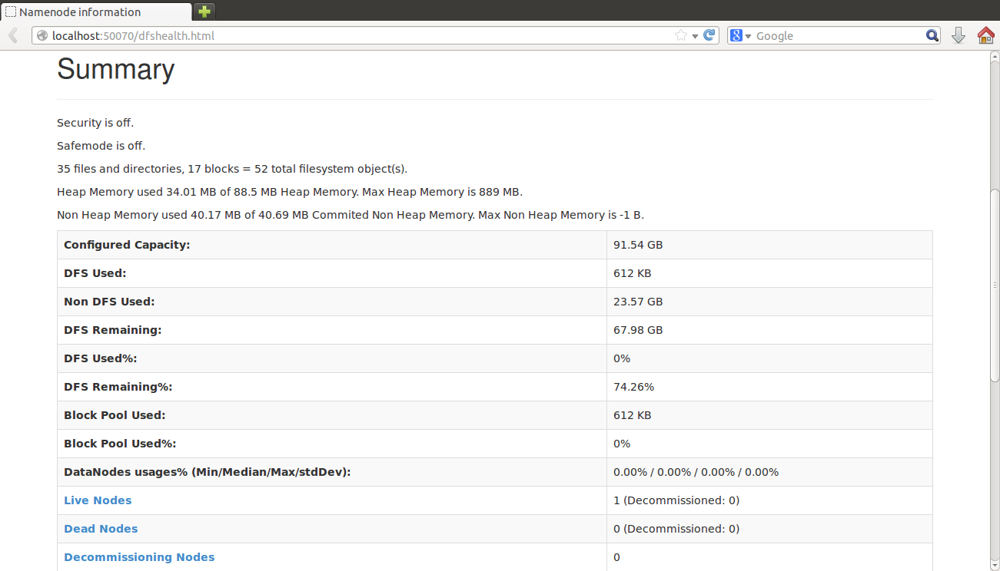
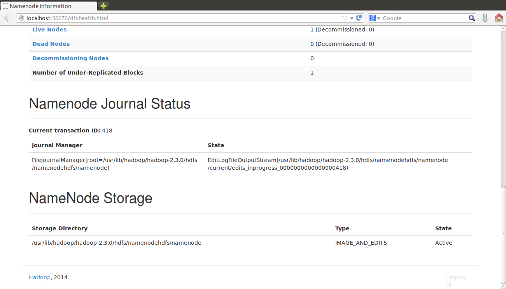
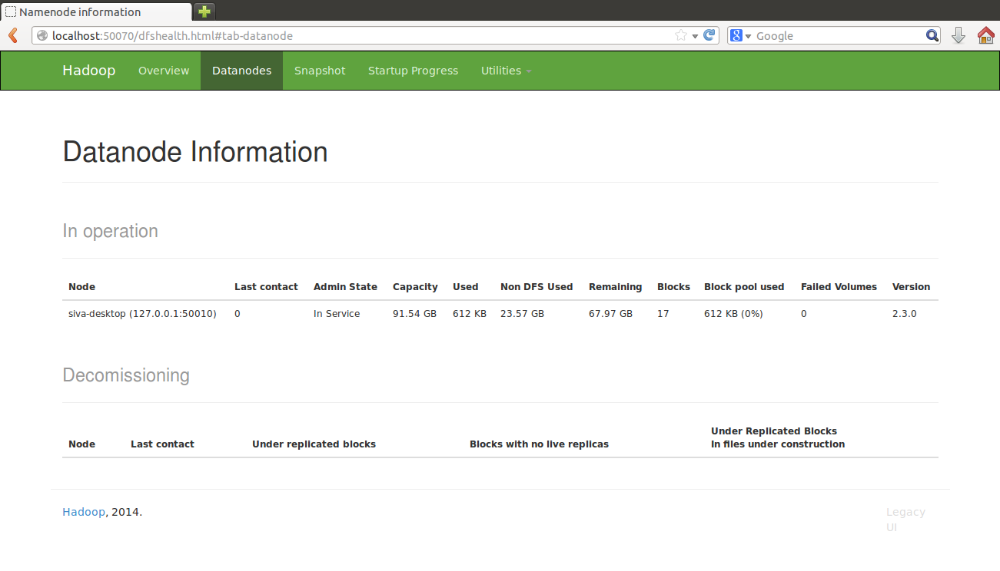
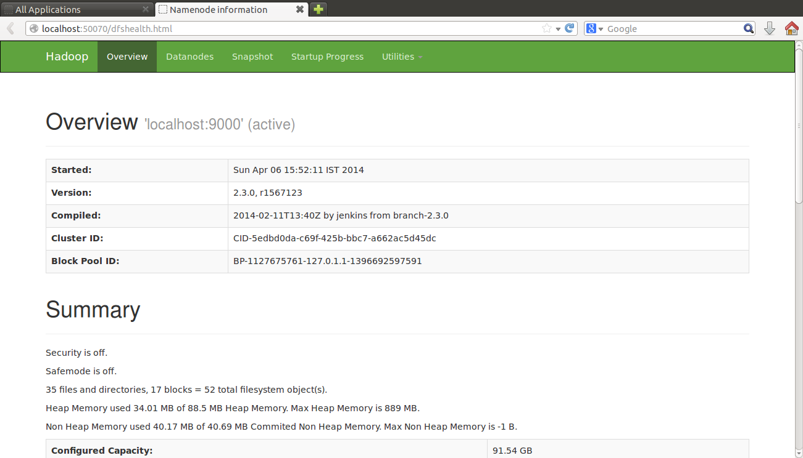
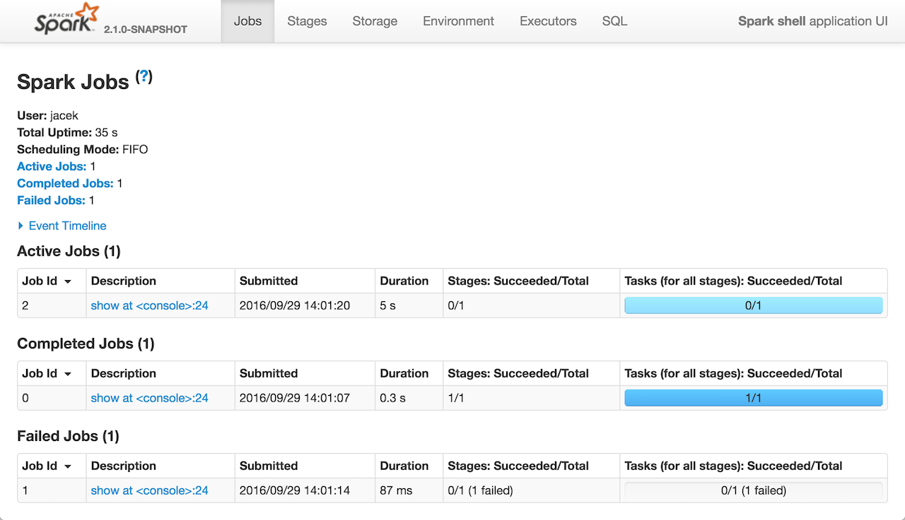

- 1. Getting Started
-
- Apache Spark
- Apache Spark is an open-source cluster-computing framework.Spark provides an interface
for programming entire clusters with implicit data parallelism and fault tolerance.Apache Spark is a fast,
in-memory data processing engine with elegant and expressive development APIs to allow data workers to efficiently
execute streaming, machine learning or SQL workloads that require fast iterative access to datasets.Spark is now
one of many data access engines that work with YARN in HDP.Spark can be as much as 10 times faster than
MapReduce for batch processing and up to 100 times faster for in-memory analytics.
- Apache Hadoop
- The Apache Hadoop software library is a framework that allows for the distributed
processing of large data sets across clusters of computers using simple programming models. It is
designed to scale up from single servers to thousands of machines, each offering local computation and storage.
MapReduce is a framework using which we can write applications to process huge amounts of data, in parallel,
on large clusters of commodity hardware in a reliable manner.
- R
- R is an open source programming language and software environment for statistical
computing and graphics. R uses command-line scripting, which is ideal for storing numerous series of
complex data-analysis and recycling that analysis' on similar sets of data."Sparklyr" is a package that
provides an interface between R and Apache Spark.
- 2 Environment setup
-
- 2.0.0 Essentials and dependencies
-
- 2.1 JAVA
- 2.2 openSSH
- 2.5 Hadoop
- 2.6 Spark
- 2.7 R
- 2.8 others
- 2.0.1 Things to do
-
For smooth installation of cluster try to follow the below guidelines
- User name of all nodes in cluster are same. This documentation uses salt user
to explain things.
- Install all system updates before starting the cluster setup.
- This documentation explains cluster with following nodes
- ip ----username(nodeType)
- 10.0.0.222-----salt(master)
- 10.0.0.10 -----salt(slave1)
- 10.0.0.11 -----salt(slave2)
- 2.1 JAVA
-
Java is a computer programming language. It enables programmers to write computer instructions using
English-based commands instead of having to write in numeric codes. It's known as a high-level language
because it can be read and written easily by humans.Like English, Java has a set of rules that determine
how the instructions are written. These rules are known as its syntax. Once a program has been written,
the high-level instructions are translated into numeric codes that computers can understand and execute.
master@salt:~$ sudo apt-get update
master@salt:~$ java -version
If there is java installed in your system, this will return the current version installed. Else...
master@salt:~$ java -version
The program 'java' can be found in the following packages:
* default-jre
* gcj-4.9-jre-headless
* gcj-5-jre-headless
* openjdk-7-jre-headless
* gcj-4.8-jre-headless
* openjdk-6-jre-headless
* openjdk-8-jre-headless
Try: sudo apt-get install <selected packages>
master@salt:~$
Java can be installed using the following commnads.
master@salt:~$sudo apt-get install default-jre
master@salt:~$ sudo apt-get install openjdk-8-jre-headless
#do the same installation on all systems
- 2.1.1 Set JAVA_HOME variable (all nodes)
- 1. Open ~/.bashrc file and add the following lines.(.bashrc is an
environment file used for a terminal session. It is present is home directory of current user with
hidden property.)
-
~/.bashrc
.
.
.
export JAVA_HOME=/usr/lib/jvm/java-8-openjdk-amd64
export PATH=PATH:$JAVA_HOME/bin:$PATH
master@salt:~$ source ~/.bashrc
#loads the updated file and applies changes made.
#Only need to dot this once after editing .bashrc file
-
Check if java is installed correctly and the variable is JAVA_HOME is set properly by following commands
master@salt:~$ java -version
openjdk version "1.8.0_162"
OpenJDK Runtime Environment (build 1.8.0_162-8u162-b12-0ubuntu0.16.04.2-b12)
OpenJDK 64-Bit Server VM (build 25.162-b12, mixed mode)
Returns the current version of java installed in system.
master@salt:~$ echo $JAVA_HOME
/usr/lib/jvm/java-8-openjdk-amd64
Return the value of JAVA_HOME, i.e., path to java directory(commonly it is /usr/lib/jvm/...)
- 2.2 openSSH
-
The OpenSSH suite provides secure remote access and file transfer.
Since its initial release, it has grown to become the most widely used implementation
of the SSH protocol. During the first ten years of its existence, ssh has largely replaced
older corresponding unencrypted tools and protocols. The OpenSSH client is included by default
in most operating system distributions, including OS X, Linux, BSD and Solaris. Any day you use
the Internet, you are using and relying on dozens if not hundreds of machines operated and maintained
using OpenSSH. In the project openSSH is required to grant authentication to master on all slave nodes
in cluster. Hadoop uses this authentication to start hdfs services on all connected nodes automatically.
Install openssh using the following command
master@salt:~$ sudo apt-get install openssh-server
#do the same installation on all systems
- 2.2.1 Generate and share authentication keys
- We can give access rights of system1 to system2 which are connected through some
network using ssh. For this we need to have some common keys shared between the nodes to remember
the list of authentic users later.
First generate the keys on every system using the following command.
master@salt:~$ ssh-keygen -t rsa
master@salt:~$ ssh-copy-id -i ~/.ssh/id_rsa.pub salt@10.0.0.222
master@salt:~$ ssh-copy-id -i ~/.ssh/id_rsa.pub salt@10.0.0.10
master@salt:~$ ssh-copy-id -i ~/.ssh/id_rsa.pub salt@10.0.0.11
master@salt:~$ chmod 0600 ~/.ssh/authorized_keys
#do the same on all systems
To check if ssh is configured properly on all nodes, try to login to any remote system using ssh command.
master@salt:~$ ssh salt@10.0.0.10
Welcome to Ubuntu 16.04.4 LTS (GNU/Linux 4.4.0-121-generic x86_64)
* Documentation: https://help.ubuntu.com
* Management: https://landscape.canonical.com
* Support: https://ubuntu.com/advantage
30 packages can be updated.
14 updates are security updates.
Last login: Sun Apr 22 05:06:51 2018 from 10.0.0.222
slave1@salt:~$
#this is terminal session of salt@10.0.0.10 node
- 2.3 Hadoop
-
- 2.3.1 Hosts configuration
- In order to identify and start slave nodes and other services
hadoop uses configuration files to identify the nodes and their ips. Edit the
/etc/hosts file and add the appropriate ips in your cluster.
/etc/hosts
127.0.0.1 localhost
10.0.0.222 salt
10.0.0.10 salt
10.0.0.11 salt
#edit the hosts file in master system only. No need to do on all nodes.
- 2.3.2 Download hadoop
- Download and install hadoop by following the steps below
master@salt:~$ mkdir /opt/hadoop
master@salt:~$ cd /opt/
master@salt:~$ wget http://apache.mesi.com.ar/hadoop/common/hadoop-1.2.1/hadoop-1.2.0.tar.gz
master@salt:~$ tar -xzf hadoop-1.2.0.tar.gz
master@salt:~$ mv hadoop-1.2.0 hadoop
master@salt:~$ chown -R salt /opt/hadoop #granting previliges
- 2.3.3 Create directories
-
Use the following commands to create directories for hadoop to use
master@salt:~$ sudo mkdir /var/log/hadoop
master@salt:~$ sudo chown salt:salt /var/log/hadoop/
master@salt:~$ sudo mkdir /usr/local/hadoopstorage
master@salt:~$ sudo chown salt:salt /usr/local/hadoopstorage/
master@salt:~$ chmod -R 755 /usr/local /hadoopstorage
master@salt:~$ mkdir /usr/local/hadoopstorage/datanode
master@salt:~$ mkdir /usr/local/hadoopstorage/namenode
- 2.3.4 Configure Hadoop environment
-
Edit the /opt/hadoop/etc/hadoop/hadoop-env.sh file to configure settings for hadoop.
hadoop-env.sh
.
.
.
#add this at the end of file
export JAVA_HOME=/usr/java/jdk1.7.0_03/ #java home
export HADOOP_HEAPSIZE=2000 #hadoop heap size
export HADOOP_LOG_DIR=/var/log/hadoop #hadoop log directory
- 2.3.5 Set Hadoop master
-
Edit the /opt/hadoop/etc/hadoop/master.sh file to configure master node for hadoop.
master
10.0.0.222
- 2.3.6 Set Hadoop slaves
-
Edit the /opt/hadoop/etc/hadoop/slaves.sh file to configure slaves for hadoop.
slaves
10.0.0.10
10.0.0.11
- 2.3.7 Configure Hdfs environment
-
Edit the /opt/hadoop/etc/hadoop/core-site.xml file to configure settings for hadoop.
core-site.xml
<?xml version="1.0" encoding="UTF-8"?>
<?xml-stylesheet type="text/xsl" href="configuration.xsl"?>
<configuration>
<property>
<name>hadoop.tmp.dir</name>
<value>/usr/local/hadoopstorage/tmp</value>
<description>The name of the default file system.</description>
</property>
<property>
<name>dfs.name.dir</name>
<value>/usr/local/hadoopstorage/namenode</value>
<final>true</final>
</property>
<property>
<name>dfs.data.dir</name>
<value>/usr/local/hadoopstorage/datanode</value>
<final>true</final>
</property>
<property>
<name>fs.default.name</name>
<value>hdfs://10.0.0.222:50070</value>
<description>The name of the default file system.</description>
</property>
</configuration>
- 2.3.8 Hdfs site configuration
-
Edit the /opt/hadoop/etc/hadoop/hdfs-site.xml file to configure HDFS.
hdfs-site.xml
<?xml version="1.0" encoding="UTF-8"?>
<?xml-stylesheet type="text/xsl" href="configuration.xsl"?>
<configuration>
<property>
<name>dfs.replication</name>
<value>2</value>
</property>
</configuration>
- 2.3.9 Set HADOOP_HOME variable
-
Edit the /home/salt/.bashrc file to set HADOOP_HOME variable.
~/.bashrc
.
.
.
#add this at the end of .bashrc file
export HADOOP_HOME=/opt/hadoop
export PATH=$HADOOP_HOME/bin:$PATH
master@salt:~$ source .bashrc
#this loads the changes done to .bashrc file and applies to system environment.
- 2.3.10 Configure slaves
-
Follow the below guidelines to configure all slaves in network
- Make all necessary changes for hadoop in master node. Edit configuration files, set environments, etc.,
- Copy the complete hadoop folder from master to all slaves. Place the folder in same path as
master node's hadoop path.
- Configure ssh authentication in all slave nodes.Every slave should be directly accesible by
master node without password promt.
- Before copying make sure every dependency file is set and all settings are configured .
- Set other environment variables and update files in all slave nodes.
- Create all directories of hadoop in slave node as specified in section 2.5.3
- 2.3.11 Format hadoop file system
-
Follow the below guidelines to format hadoop file system and make it ready to use.
master@salt:~$ cd $HADOOP_HOME/bin
master@salt:/opt/hadoop/bin$ ./hadoop namenode -format
#if name node is sucessfully formatted, the process exits with status 0.
#else read log files and debug any errors/warnings given.
Formatting namenode removes all contents of hadoop filesystem. Backup everyting
from hdfs before formatting it.
- 2.4 Spark
-
Apache Spark is a lightning-fast cluster computing technology, designed for fast computation
released in 2009. It has become one of the key big data distributed processing frameworks in the world.
Spark can be deployed in a variety of ways, provides native bindings for the Java,
Scala, Python, and R programming languages, and supports SQL, streaming data, machine
learning, and graph processing.
- 2.4.1 Download spark
-
Download Apache Spark from official repository using the following commands
master@salt:~$ cd /opt
master@salt:~$ wget https://www.apache.org/dyn/closer.lua/spark/spark-2.3.0/spark-2.3.0-bin-hadoop2.7.tgz
Extract the downloaded file in desired location. Assume it is extracted in /opt folder
master@salt:~$ tar -xvf spark-2.3.0-bin-hadoop2.7.tgz
- 2.4.2 Spark setup
-
Configure and set spark environment variables in .bashrc file of home directory
~/.bashrc
.
.
.
export SPARK_HOME=/home/salt/R/spark
export PATH=$SPARK_HOME/bin:$PATH
master@salt:~$ source .bashrc
Edit the spark configurations file in spark directory
spark/conf/spark-env.sh
.
.
SPARK_MASTER_IP=10.0.0.222
.
.
- 2.5 R
-
R is a programming language and free software environment for statistical
computing and graphics that is supported by the R Foundation for Statistical
Computing.The R language is widely used among statisticians and
data miners for developing statistical software and data analysis. Polls,
surveys of data miners, and studies of scholarly literature databases show that
R's popularity has increased substantially in recent years.
- 2.5.1 Install R
-
Download R from official repository using the following commands
master@salt:~$ sudo add-apt-repository 'deb [arch=amd64,i386]https://cran.rstudio.com/bin/linux/ubuntu xenial/'
master@salt:~$ sudo apt-get install r-base
Download and install R-studio(optional) for ease of use.
- 2.5.2 Install Sparklyr
-
Download and install sparklyr package in R using following command
> install.packages("sparklyr")
Download and install R-studio(optional) for ease of use.
- 2.5.3 Install other packages
-
Download and install R packages
> install.packages(e1071)
> install.packages(dplyr)
> install.packages(amap)
> install.packages(ggplot2)
> install.packages(Rcurl)
- 2.6 Other dependencies
-
There could be some missing dependencies while installing above
packages and softwares. Install them carefully by reading errors
prompted during installations. Some common dependencies are as follows
master@salt:~$ sudo apt-get -y install libcurl14-gnutls-dev
master@salt:~$ sudo apt-get -y install libssl-dev
master@salt:~$ sudo apt-get -y install libxml12-dev
- 3 Starting Cluster
-
- 3.1 Starting hdfs
-
Hadoop cluster can be started simply by following command.
master@salt:~$ cd $HADOOP_HOME
master@salt:/opt/hadoop$ ./sbin/start-dfs.sh
#use jps command to see list of active services
master@salt:~$ jps
JPS
NameNode
TaskTracker
JobTracker
- 3.1.1 Viewing cluster info
-
Hadoop cluster's information can be viewed by the web interface it provides. Use the following ip(default)
to see hadoop cluster summary. Port of this is what you've specified in hadoop configuration file core-site.xml




- 3.2 Starting spark
-
Unlike hadoop which automatically starts services of master as well as slaves, Spark won't do that.
Every spark worker node needs to be manually connected to spark master from that system.
- 3.2.1 Start spark master
-
Start the spark master service by using the following command
master@salt:~$ cd $SPARK_HOME
master@salt:/opt/spark$ ./sbin/start-master.sh
- 3.2.2 Start spark slave
-
Connect the slave services from each slave by using the following commands.
From slave1(10.0.0.10) use the following commands
slave1@salt:~$ cd $SPARK_HOME
slave1@salt:/opt/spark$ ./sbin/start-slave.sh spark://10.0.0.222:7077
And from slave2(10.0.0.11) to do the same thing
slave2@salt:~$ cd $SPARK_HOME
slave2@salt:/opt/spark$ ./sbin/start-slave.sh spark://10.0.0.222:7077
For all remaining slaves do the same.
- 3.2.3 spark webview
-
Spark too had a web interface to have a look at summary of spark cluster.
It also gives us the applications currently running on our spark cluster and the processors available.
Spark slave information can also be seen from webview.

And the list of job statistics are viewed as given below

- 3.3 Using sparklyr
-
Sparklyr is an R package that lets you analyze data in Spark while using familiar tools in R.
Sparklyr supports a complete backend for dplyr, a popular tool for working with data frame objects
both in memory and out of memory. You can use dplyr to translate R code into Spark SQL.
Sparklyr also supports MLlib so you can run classifiers, regressions, clustering, decision trees,
and many more machine learning algorithms on your distributed data in Spark. With sparklyr you can
analyze large amounts of data that would not traditionally fit into R memory. Then you can
collect results from Spark into R for further visualization and documentation. Sparklyr is also
extensible. You can create R packages that depend on sparklyr to call the full Spark API.
One example of an extension is H2O rsparkling, an R package that works with H2O's machine
learning algorithm. With sparklyr and rsparkling you have access to all the tools in H2O for
analysis with R and Spark.
- 3.3.1 Spark connection from R
-
To create a spark connection from R-interface use the following lines of code
R-console
> library(sparklyr)
> library(dplyr)
> SPARK_HOME <- "/opt/spark/"
> sc <- spark_connect(master = "spark://10.0.0.222:7077", spark_home = SPARK_HOME)
- 3.3.2 Insert data into Spark cluster
-
Spark stores data in the form of tables and before copying to spark cluster type cast whatever data
you copy to data.frame format.
R-console
> spark_table <- copy_to(sc,iris)
- 3.3.2 Spark mllib
-
Sparklyr provides bindings to Spark's distributed machine learning library.
In particular, sparklyr allows you to access the machine learning routines provided by
the spark.ml package. Together with sparklyr's dplyr interface, you can easily create and tune
machine learning workflows on Spark, orchestrated entirely within R. Sparklyr provides three
families of functions that you can use with Spark machine learning:
1.Machine learning algorithms for analyzing data (ml_*)
2.Feature transformers for manipulating individual features (ft_*)
3.Functions for manipulating Spark DataFrames (sdf_*)
4. Expample
Svm in R
R-console
> library(e1071)
> library(ggplot2)
> library(amap)
> setwd("/home/salt/Desktop/projFiles/cohn-kanade-images croppedLabelled");
> # read data from a csv file
> d<-read.csv("testFinal.csv",sep='\t',header=FALSE,row.names = NULL,stringsAsFactors = TRUE);
> d2<-d[,c(-1,-1026)]
> #apply principle component analysis on given data
> model<-prcomp(d2)
> nSC1<-40
> #visiualize classification by PCs which are accessed by model$x[,i] and labels from d[,1]
> features1<-model$x[,1:nSC1];
> #append labels at the end of feature matrix
> features1<-cbind(features1,d[,1]);
> set.seed(2222);
> #generate random indexes for training and test data set generation
> indexes<-sample(1:nrow(features1),0.8*nrow(features1));
> testData<-features1[indexes,];
> trainData<-features1[-indexes,];
> exprName<-matrix(testData[,(nSC1+1)],ncol=1);
> exprValues<-matrix(testData[,-(nSC1+1)],ncol=nSC1);
> #apply support vector machine on test data to calssify data
> svmModel<-svm(exprName~exprValues);
> #print (summary(svmModel))
> #use model to verify on test data
> predicted<-predict(svmModel,testData[,-(nSC1+1)])
> #compare results
> result<-cbind(round(predicted),testData[,(nSC1+1)]);
> print (result)
> r<-matrix(unlist(result),ncol=2)
> smlr<-1
> for (i in 1:nrow(r)){
+ if(r[i,1]==r[i,2])
+ smlr<-smlr+1
> }
> prnt<-(smlr*100/nrow(r))
> paste0(prnt,"% accurate!!!")
> set.seed(Sys.time());
SVM using sparklyr's mllib
R-console
> library(e1071)
> library(dplyr)
> library(sparklyr)
> library(data.table)
> setwd("/home/salt/Desktop/projFiles/cohn-kanade-images croppedLabelled");
> #set SPARK_HOME and establish a spark connection
> SPARK_HOME="/home/salt/R/spark";
> spark_disconnect_all();
> sc<-spark_connect(master="spark://10.0.0.222:7077",spark_home=SPARK_HOME);
> # read data from a csv file in hadoop cluster
> myData<-fread("/opt/hadoop/bin/hadoop fs -text hdfs://10.0.0.222:54310/test/data90.csv",sep = '\t',header = FALSE,stringsAsFactors = TRUE)
> d300395<-myData[,301:395];
> d300395<-matrix(unlist(d300395),ncol=95,byrow = TRUE)
> d300395t<-t(d300395)
> d300395t<-as.data.frame(d300395t);
> #copy data to spark cluster and create a spark_table
> face_data<-copy_to(sc,d300395t);
> #apply principle component analysis on data using spark ml_pca function
> d_pca2<-face_data %>%
+ ml_pca();
> nPC<-30 #number of features to consider
> #select features after applying pca on data
> features2<-d_pca2$components[,1:nPC];
> #append labels to features
> features2<-cbind(features2,myData[,1]);
> set.seed(1234);
> #generate random indexes for training and test data set generation
> indexes2<-sample(1:nrow(features2),0.8*nrow(features2));
> testData2<-features2[indexes2,];
> trainData2<-features2[-indexes2,];
> exprName2<-matrix(testData2[,nPC+1],ncol=1);
> exprValues2<-matrix(testData2[,-(nPC+1)],ncol=nPC);# features is of dimension 90 x 11 where 11>labels
> #generate model using priciple components with svm
> svmModel2<-svm(exprName2~exprValues2);
> #test model with sample data
> predicted2<-predict(svmModel2,testData2[,-(nPC+1)])
> #compare results after prediction by model
> result2<-cbind(round(predicted2),testData2[,(nPC+1)]);
> print (result)
> r2<-matrix(unlist(result2),ncol=2)
> smlr2<-1
> for (i2 in 1:nrow(r2)){
+ if(r2[i2,1]==r2[i2,2])
+ smlr2<-smlr2+1
+ }
> prnt2<-(smlr2*100/nrow(r2))
> paste0(prnt2,"% accurate!!!-----using spark cluster")
> #close spark connection
> spark_disconnect(sc);
> set.seed(Sys.time())